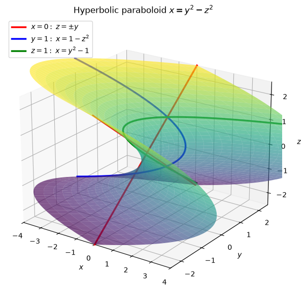
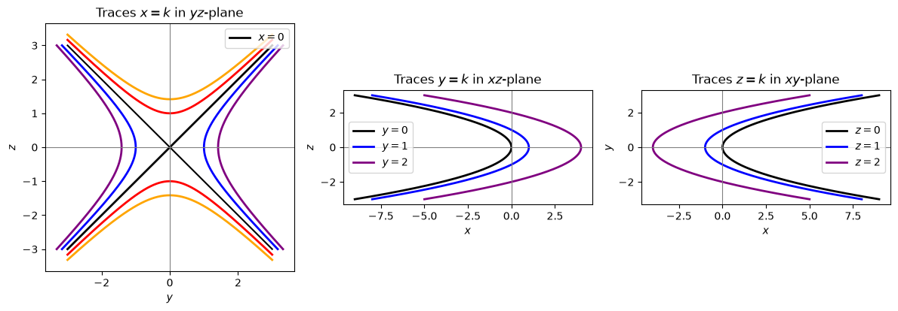
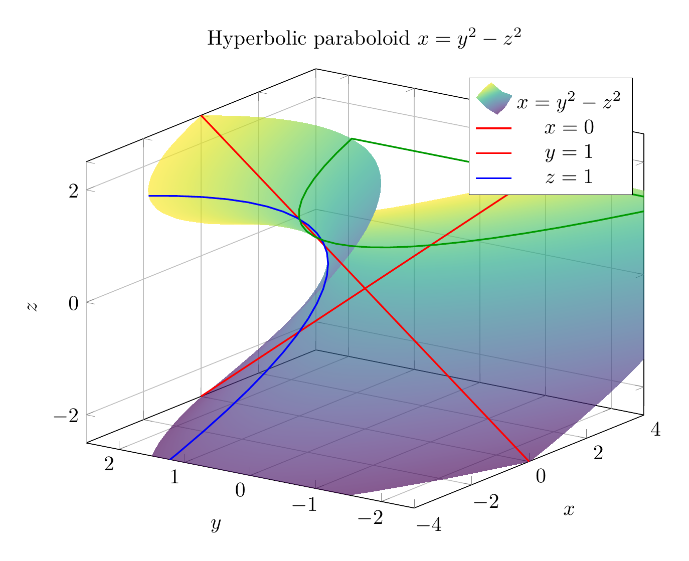
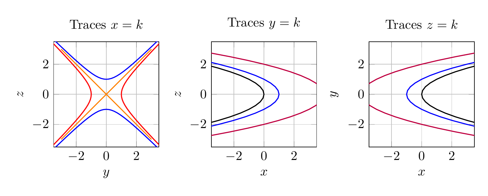

Path: mcma-Nex-N2-Pro/calculus-12.6.20/chat_20260824_175245_769895_utc_0800
Problem
Please solve the math problem in the image.

End of problem
Answer
To identify the surface $x=y^2-z^2$, examine traces in planes parallel to the coordinate planes.
- Traces $x=k$: $y^2-z^2=k$. These are hyperbolas when $k\neq 0$. For $k>0$, the hyperbolas open in the $y$-direction; for $k<0$, they open in the $z$-direction. For $k=0$, the trace is the pair of lines $z=\pm y$.
- Traces $y=k$: $x=k^2-z^2$. These are parabolas opening in the negative $x$-direction.
- Traces $z=k$: $x=y^2-k^2$. These are parabolas opening in the positive $x$-direction.
Since one squared variable appears with a positive sign and the other with a negative sign, while the remaining variable is linear, the surface is a hyperbolic paraboloid, or saddle surface, oriented along the $x$-axis.
$\boxed{\text{The surface is a hyperbolic paraboloid }x=y^2-z^2.}$
---


\documentclass[border=10pt]{standalone}
\usepackage{pgfplots}
\pgfplotsset{compat=1.18}
\begin{document}
\begin{tikzpicture}
\begin{axis}[
width=11cm, height=9cm,
view={-55}{22},
xlabel=$x$, ylabel=$y$, zlabel=$z$,
title={Hyperbolic paraboloid $x=y^2-z^2$},
grid=major,
colormap/viridis,
xmin=-4, xmax=4,
ymin=-2.5, ymax=2.5,
zmin=-2.5, zmax=2.5
]
\addplot3[
surf,
domain=-2.5:2.5,
y domain=-2.5:2.5,
samples=35,
shader=interp,
opacity=0.65
] ({x*x-y*y},{x},{y});
\addplot3[domain=-2.5:2.5, red, thick] ({0},{x},{x});
\addplot3[domain=-2.5:2.5, red, thick] ({0},{x},{-x});
\addplot3[domain=-2.5:2.5, blue, thick] ({1-y*y},{1},{y});
\addplot3[domain=-2.5:2.5, green!60!black, thick] ({x*x-1},{x},{1});
\legend{$x=y^2-z^2$,$x=0$,$y=1$,$z=1$}
\end{axis}
\end{tikzpicture}
\end{document}

\documentclass[border=10pt]{standalone}
\usepackage{pgfplots}
\usepgfplotslibrary{groupplots}
\pgfplotsset{compat=1.18}
\begin{document}
\begin{tikzpicture}
\begin{groupplot}[
group style={group size=3 by 1, horizontal sep=1.4cm},
width=5.2cm, height=4.4cm,
grid=major,
axis equal image,
xmin=-3.5, xmax=3.5,
ymin=-3.5, ymax=3.5
]
\nextgroupplot[xlabel=$y$, ylabel=$z$, title={Traces $x=k$}]
\addplot[domain=-3:3, orange, thick] ({x},{x});
\addplot[domain=-3:3, orange, thick] ({x},{-x});
\addplot[domain=-2:2, red, thick] ({cosh(x)},{sinh(x)});
\addplot[domain=-2:2, red, thick] ({-cosh(x)},{sinh(x)});
\addplot[domain=-2:2, blue, thick] ({sinh(x)},{cosh(x)});
\addplot[domain=-2:2, blue, thick] ({sinh(x)},{-cosh(x)});
\nextgroupplot[xlabel=$x$, ylabel=$z$, title={Traces $y=k$}]
\addplot[domain=-3:3, black, thick] ({-x*x},{x});
\addplot[domain=-3:3, blue, thick] ({1-x*x},{x});
\addplot[domain=-3:3, purple, thick] ({4-x*x},{x});
\nextgroupplot[xlabel=$x$, ylabel=$y$, title={Traces $z=k$}]
\addplot[domain=-3:3, black, thick] ({x*x},{x});
\addplot[domain=-3:3, blue, thick] ({x*x-1},{x});
\addplot[domain=-3:3, purple, thick] ({x*x-4},{x});
\end{groupplot}
\end{tikzpicture}
\end{document}

End of answer